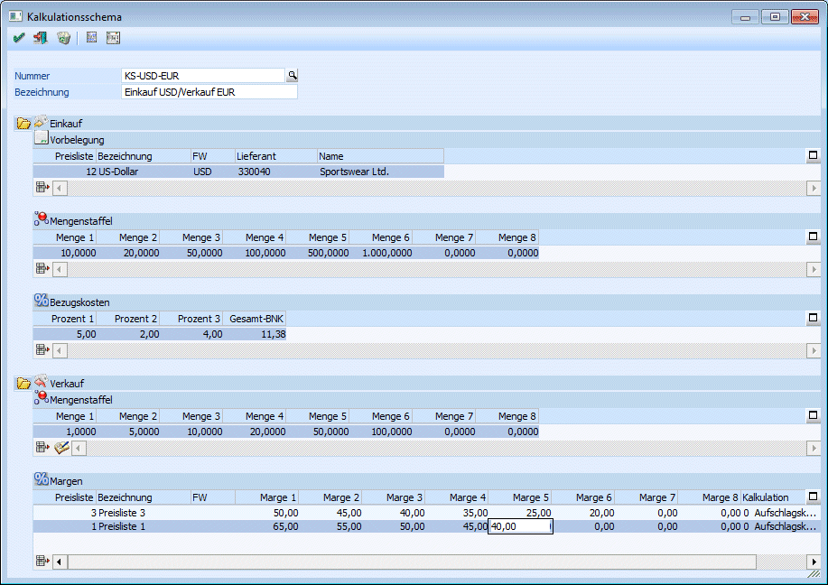

Im Menüpunkt "Kalkulationsschema" können Vorbelegungen für die Artikelkalkulation eingetragen werden. Die hier angelegten Schemata sind Voraussetzung für die Berechnung der Verkaufspreise im Artikelstamm. Grundsätzlich wird hier festgelegt, mit welchen Preislisten Ein- und Verkauf erfolgen, in welche Mengenstaffeln für den Einkauf verwendet werden, wie viel Bezugsnebenkosten auf den Einkaufspreis aufgeschlagen werden sollen und mit welchem Prozentaufschlag (Marge) auf welche Verkaufsmenge berechnet wird.

Das Schema kann mit einer 20stelligen Nummer angelegt werden. Für die Bezeichnung des Kalkulationsschemas stehen 100 Stellen zur Verfügung.
Bei der Neuanlage eines Schemas kann mittels Matchcode ein bestehendes Schema geladen und die Einstellungen übernommen werden.
Einkauf
Ø Vorbelegung
Hier erfolgt die Auswahl der Preisliste, in der die Einkaufspreise angelegt werden sollen. Handelt es sich um eine lieferantenspezifische Kalkulation kann auch ein Lieferantenkonto hinterlegt werden.
Ø Mengenstaffel
Es können bis zu 8 Mengenstaffeln eingetragen werden.
Ø Bezugskosten
Es können bis zu 3 Prozentsätze eingegeben werden (je ein eigener Prozentsatz für Zoll, Fracht usw.). Die Berechnung des Gesamtprozentsatzes erfolgt additiv, also so wie beim Zeilenrabatt im Belegerfassen.
Beispiel - Berechnung der Gesamt-Bezugsnebenkosten:
Einkaufspreis: 100,- Bezugskosten: 5%, 2% und 4% - ergibt nach additiver Berechnungsmethode einen Gesamtprozentsatz von 11,38%. Berechnung der Bezugskosten:
1.: 100,00 * 1,05 = 105,00
2.: 105,00 * 1,02 = 107,10
3.: 107,10 * 1,04 = 111,38
Verkauf
Ø Mengenstaffel
Es können bis zu 8 Mengen eingegeben werden.
Ø "vom Einkauf übernehmen"
Über diesen Button kann die im Einkauf eingegebene Staffel übernommen werden.
Ø Margen
Es können bis zu 8 Margen und beliebig viele Preislisten erfasst werden. So können innerhalb eines Kalkulationsschemas mehrere Preislisten in verschiedenen Währungen gewartet werden. Zusätzlich kann angegeben werden, ob sich die Prozentsätze auf den Einkaufs- oder Verkaufspreis beziehen (Aufschlags- oder Abschlagskalkulation).
Ø Entfernen
In jeder Tabelle gibt es einen Entfernen-Button, mit dem Zeile initialisiert werden kann.
Ø  OK
OK
Beim Druck des OK-Buttons wird das Schema gespeichert.
Hinweis
Falls eine Verkaufspreisliste mehrfach eingetragen wurde, wird eine entsprechende Warnung ausgegeben.
Ø Löschen
Das aktuelle Kalkulationsschema wird gelöscht. Das ist allerdings nur möglich, wenn das Schema bei keiner Artikeluntergruppe hinterlegt ist.
Ø Untergruppenliste
Beim Druck des Buttons "Untergruppenliste" wird eine Liste aller Artikeluntergruppen
ausgegeben, bei denen das geladene Schema hinterlegt ist
Ø Artikelliste
Beim Druck des Buttons "Artikelliste" wird eine Liste aller Artikeluntergruppen
ausgegeben, bei denen das geladene Schema hinterlegt ist. Zusätzlich werden alle Artikel
angezeigt, bei denen diese Artikeluntergruppe hinterlegt ist.